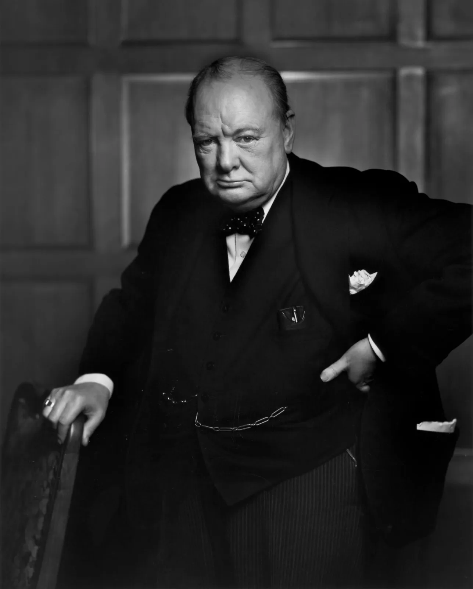

Sir Winston Leonard Spencer Churchill
(30 November 1874 – 24 January 1965)
Sir Winston Leonard Spencer Churchill (30 November 1874 – 24 January 1965) was a British statesman, soldier, and writer who served as Prime Minister of the United Kingdom during the Second World War and again from 1951 to 1955. He is widely known for his leadership during the war, particularly for his speeches that strengthened British morale during difficult periods. Before becoming prime minister, Churchill held several major government positions and had a political career spanning more than five decades. He was awarded the Nobel Prize in Literature in 1953 for his historical and biographical works.